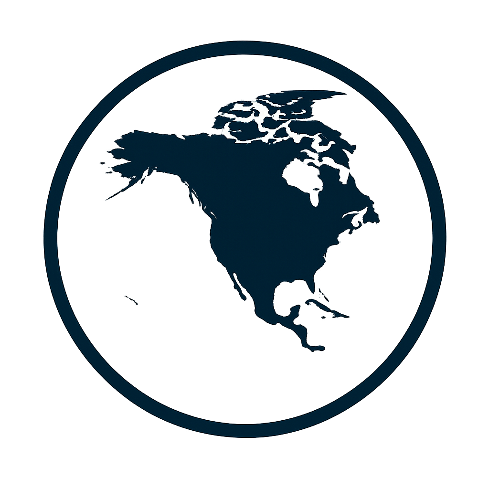

Étape 13 : Canada 

Treizième étape du Trophée Jules Verne au Canada, une véritable étape de montagne dans les Rocheuses. Sur 163,1 km, les coureurs affrontent plusieurs ascensions courtes mais sévères avant la montée finale vers Marmot Basin. Le parcours exigeant mettra à l'épreuve les meilleurs grimpeurs et pourra créer des écarts décisifs.